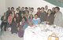

پذيرش > مقالات > علیه سکوت > کمپين برای برابري جنسيتي در قانون خانواده: نگاهی به تصويب قانون خانواده بحث برانگيز (...)


 کمپين برای برابري جنسيتي در قانون خانواده: نگاهی به تصويب قانون خانواده بحث برانگيز فيجی در قانون مدنی(1) کمپين برای برابري جنسيتي در قانون خانواده: نگاهی به تصويب قانون خانواده بحث برانگيز فيجی در قانون مدنی(1)
6 اردیبهشت 1386 - پ.امرانا جلال/ مترجمان : فروغ قره داغی و جوانه جواهری - نسخه قابل چاپ
مقدمه
در اکتبر سال 2003 اتفاقی تاريخي رخ داد. قوه مقننه دو مجلسي فيجي لايحه قانون خانواده 2003 (FLA) را اجماعا، با رأي موافق هردو مجلس، در قانون مدني تصويب کرد که باعث شادي اعضا و کارمندان تیم منابع حقوق منطقه ای (RRRT ) و جنبش حقوق زنان فيجي (FWRM)که هر دو براي تصويب سند، سخت تلاش کرده بودند، شد. درگیرشدن FWRM در روند اصلاح قوانين خانواده به سال 1992 و فعاليت RRRT به سال 1996 بازمي گردد. فعاليت خود نويسنده نيز به پيش از اين تاريخ يعني به سال 1987 برمي گردد. تصويب FLA در نتيجه يک فعاليت طولاني و پيچيده بود و با مقاومت فراوان روبرو شد. اما در نهايت پارلمان فيجي اين طرح را به عنوان قانون تصويب کرد.
FLA شرايط بهتري را براي خانواده ها و خصوصاً زنان و کودکان فيجي فراهم مي کند. تبعيض هاي نظام يافته بر عليه زنان را از بين مي برد، زمينه فعاليت برابر را مهيا مي کند، کودکان را در مرکز توجه قرار داده و والدين را مجبور به مراقبت مناسب از کودکانشان مي نمايد. نظام قانوني جداگانه اي براي اقليت هاي ديني در فيجي وجود ندارد. زنان مسلمان و غير مسلمان تجربه مشابهي در زمينه قانون موجود خانواده دارند. قانون جديد در نوامبر 2005 اجرا خواهد شد. خواه ناخواه قانون جديد به خوبي خواسته هاي سياسي دولت حاضر، منابع تخصيص داده شده براي اجراي آن و گروه هاي لابي گر حامي آن را بر مي آورد.
اما چرا سرانجام لايحه قانون خانواده 2003 تصويب شد؟ چه شرايطي سبب تصويب اين قوانين مترقي و دموکراتيک شد؟ چه درسي از آن مي توان گرفت؟ براي درک شرايط سياسي دوران فعاليت گروه هاي فمنيست در فيجي لازم است ابتدا به بررسي شرايط سياسي موجود بپردازيم. همچون بسياري ديگر از کشورها، زنان در فيجي نه فقط بر اساس جنس و جنسيتشان، بلکه بر اساس بسياري از نيروها و تأثيرات متقابل آن ها تعريف مي شوند. در فيجي اين تأثيرات شامل پيامدهاي استعمار، حکومت هاي استعماري(تقسيمات و قوانين حکومتي بريتانيايي) ، فقدان دموکراسي و کودتاهاي متوالي، طبقات اجتماعي و اقتصادي، قوميت، فقر، بنيادگرايي و نژادپرستي هستند. اين مسائل باعث ايجاد مشکلات بزرگ و گاهاً لاينحل براي زناني که براي دستيابي به اهداف فمنيستي تلاش مي کنند، شده است.
دو تغيير عمده سياسي حاصل از تبعيض نژادي و نبود دموکراسي در سالهاي 1987 و 2000 برنامه هاي فمينيستي را متحول نموده و باعث ايجاد سوال در زمينه برابري جنسيتي بعليه سياست از طريق کمپين در دوران بي ثباتي شدند. قانون اساسي که در سال 1997 تلاش هايي براي لغو آن انجام شده بود با موفقيت از طريق جامعه متمدن در دادگاه ها به کار رفت و در سال 2001 فيجي به تدريج به سوي اجراي قانون اساسي که هنوز در زمان انتخابات سپتامبر 2001 اجرا مي شد، بازگشت. اين قانون اساسي هنوز براي کاربري در قوانين معمول و در جدال با حالت هاي مالکيت سنتي زمين است.
قانون اساسي 1997 کميته اي تحت عنوان حقوق بشر و با هدف آموزش محتويات اعلاميه حقوق بشر و ارائه پيشنهاداتي به دولت در زمينه مواردي که بر پذيرفته شدن از سوي سازمان حقوق بشر مؤثرند تأسيس کرد.
قانون اساسي 1997 قانوني قابل توجه و هدفمند است که بطور بي سابقه به زنان حقوق برابر مي دهد. FWRM از طريق کمپين، نبردي طولاني و تلخ را براي قرار دادن بند 38 در قانون اساسي انجام داد که از زنان در برابر جناياتي که بر مبناي جنس، جنسيت، وضعيت تأهل و وضعيت جنسي انجام مي شوند حمايت مي کند.
دولتمردان فيجي در سال 1874 قدرت را به ملکه ويکتوريا واگذار کردند تا به پيروزي هاي منطقه اي پادشاهي رقيب پايان دهند. در سال 1879 انگلستان شروع به آوردن کارگران هندي براي کار در مزارع نيشکر کرد. در زمان استقلال در سال 1970 جمعيت بومي تقريباً برابر با جمعيت دورگه هند و فيجي بود. 20% از دورگه ها (که 10% کل جمعيت 850هزار نفري فيجي را تشکيل ميدهند) مسلمان و باقيمانده آنها عمدتاً هندو هستند. اليته تعداد کمي از آن ها مسيحي شده اند. بيشتر بوميان هم متدينين مسيحي هستند.
پس از بحران سال 2000 صنعت توريسم کساد شد و 7هزار نفر شغلشان را از دست دادند و بيش از 20 نفر مردند. در يک جمعيت 850 هزار نفري اين امر اثرات وحشتناکي بر اقتصاد و مردم خواهد داشت. فقر در فيجي خيلي مهم است. گزارش توسعه انسانی سال 2004 UNDP اعلام کرد 31% جمعيت در فقر زندگي مي کنند.
اصلاحيه قانون اساسي در سال 1997 به بوميان و دورگه ها حقوق برابر داد. اما تعداد صندلي هاي مجلس هنوز بر اساس شرايط قوميتي تعيين مي شوند. همچنين نشان داد که مهم تر بودن مصالح فيجيايي ها به عنوان اصل حمايت شده ، همچنان ادامه خواهد داشت. همچنين اطمينان داده شد که مصالح جامعه فيجي پايين تر از مصالح ساير جوامع نخواهد بود.
در اين نوشته ( جولاي 2005) ثباتي نسبي وجود دارد و حکم قانون عموماً انجام مي شود. بسياري از شرکت کنندگان خائن کودتا ي مربوط به جنايات سال 2000 به حبس هاي طولاني محکوم شدند.
عکس العمل ها ي موجود در برابر فعاليت هاي زنان
در اواخر سال 2001، دولت یکی از سازمان های غیر دولتی حقوق بشری را به دلیل آنکه قانونی بودن دولت را به چالش کشیده بود، لغو مجوز کرد و سعی داشت تا گروه های دیگری را که به همین روش رفتار می کردند، از این طریق یعنی لغو مجوز، محدود سازد. بنابراین ان جی اوهای فعال زنان در آن دوره تحت فشار بودند. از آنجا که NGO ها عوامل موثر در بهبود وضعيت زنان مي باشند، چنين محدوديت هايي همزمان با عدم وجود حق قانوني براي ثبت، مانع بزرگی برای فعالیت ها در جهت رسیدن به برابری هستند.
نقش زنان
در فيجي بيشتر سازمان هاي زنان نه چندنژادي اند و نه فمينيست. بيشتر سازمان هاي زنان قومیتی و یا سنتی اند و فعاليت هاي آن ها بر اساس مباحث سنتي مثل صنايع دستي و يا خدمات مذهبي و يا رفاهي است. تعداد سازمانهايي که آگاهانه و حق طلبانه چندنژادي يا فمينيست هستند انگشت شمار است. آن ها عبارتند از FWRM، مرکز بحران زنان فيجي، پیوند زنان پسفیک(آسیای آزاد) و فعاليت محدود انجمن زنان جوان مسيحي.
FWRM يک NGO فمينيست با هدف فمينيسم، حقوق بشر و دموکراسي است.
FWRM بازيگري کوچک اما فعال در زمينه جنسيت و حقوق زنان در فيجي بوده است. دو کودتاي 1987 و تحولات سياسي 2000 شاهد رشد اين NGO و بديل آن به يک NGO مهم در جريان نشرمباحث حقوق بشر بودند. FWRM از يک NGO فمنيست با فعاليت عمده در زمينه زنان به يک سازمان مفسر و بازيگر عمده سياسي و اجتماعي محترم در زمينه هاي قانوني، سياسي، اجتماعي، فرهنگي و اقتصادي تبديل شد. در سال هاي 2000و 2001 عمده فعاليت هاي FWRM در زمينه مباحث فمينيسم به نقطه اي رسيد که همه قواي ذهني و ساير منابع خود را بر تجديد دموکراسي و قانون اساسي متمرکز کند. اما برخي از فعالين و کارکنان FWRM متوجه نشدند که دموکراسي شرط اوليه دستيابي به حقوق زنان است و اين که سازمان انتخاب کمي براي درگيري در فضاي سياسي به منظورايجاد زمينه بازگشت به قانون اساسي را دارد.
FWRM اختلافات نژادي خود را با تمرکز بر کمپين هايي که همه اعضا در مورد آن توافق داشتند حل کرد. آن ها نمي توانستند در مورد مسائل نژادي هم عقيده باشند. اما قطعاً در زمينه حقوق اساسي بشر و تخصيص همه منابع براي حمايت از آن هم عقيده بودند.
ادامه دارد ....
ارسال به
بالاترین
،
توییتر
،
فریندفید
،
فیسبوک
در همين بخش :
 8 مارس روزی که نمی توان از ما دریغ کرد 8 مارس روزی که نمی توان از ما دریغ کرد
با طلاق توافقی از حقارت و کتک و فحش رها شدم /گزارشی از دادگاه محلاتی: مریم مالک
تجمع مادران عزادار در رشت
تغییر ممکن است/ جلوه جواهری(26 روز پس از بازداشت کاوه مظفری)
گامهایی که با تزلزل نا آشنایند/ گرامی داشت چهلم ندا در رشت
ديگر بخش ها :
طرح یک میلیون امضا
|
مقالات
|
سایت نوشته ها
|
اخبار
|
گزارش كمپين
|
گفت و گو
|
علیه سکوت
|
كوچه به كوچه
|
نامه های شما
|
گزارش ویژه
|
گفتگو با اعضا
|
ویژه سالگرد کمپین
|
تصویر برابری
|
دل آرام علی
|
تریبون
|
مقالات
|
تاریخ شفاهی
|
خارج از چارچوب
|
کتابخانه
|
درباره کمپین
|
کمپین در شهرها
|
کمپین در بند
|
صدای تغییر
|
ویژه 22 خرداد
|
لایحه حمایت از خانواده
|
گالری
|
عشا مومنی
|
امیر یعقوبعلی
|
خدیجه مقدم
|
راحله عسگری زاده و نسیم خسروی
|
پروین اردلان،جلوه جواهری، مریم حسین خواه، ناهید کشاورز
|
زینب پیغمبرزاده
|
سعیده امین، سارا ایمانیان، محبوبه حسین زاده، ناهید کشاورز و همایون نامی
|
احترام شادفر
|
نسیم سرابندی زاده،فاطمه دهدشتی
|
وبلاگ مهمان
|
پرونده خرم آباد
|
دستگیری ها
|
مریم مالک
|
پرستو اللهیاری
|
مهرنوش اعتمادی
|
سمیه رشیدی
|
Other Languages
|
همراهان
|
«فراخوان کمپین ده روز با بهاره هدایت»
| English
|